LLMI-CDP: mở rộng VisualGLM/ChatGLM thành trợ lý thị giác-ngôn ngữ cho nhận diện bệnh, sâu hại cây trồng và tư vấn phòng trừ.
Từ nhận diện ảnh đơn thuần đến trợ lý nông nghiệp có thể đối thoại, giải thích triệu chứng và đề xuất biện pháp phòng trừ.
Một câu trả lời tốt phải đồng thời nhận ra cây trồng, bệnh hoặc sâu hại, triệu chứng, mức nguy hiểm và biện pháp xử lý.
“What disease is affecting the crop in this image?” hoặc “How to prevent and control tomato late blight?”
Màu vết bệnh, hình dạng đốm, vùng hoại tử và phân bố trên lá thường khác nhau rất nhỏ giữa các bệnh cùng cây.
MLLM tổng quát có thể mô tả ảnh, nhưng thiếu kiến thức phòng trừ cụ thể cho từng bệnh và từng loại cây.
Không chỉ phân lớp ảnh một lần; hệ thống phải giữ ngữ cảnh và trả lời các câu hỏi tiếp theo về quản lý bệnh.
Nhận diện ảnh tốt trong bài toán hẹp, nhưng không mô tả triệu chứng và không sinh khuyến nghị hành động.
Có khả năng đối thoại, nhưng thường trả lời chung chung, nhầm bệnh trong cùng cây hoặc thiếu chi tiết nông học.
Nông nghiệp cần mô hình vừa hiểu ảnh, vừa dùng được bằng ngôn ngữ tự nhiên, vừa tiết kiệm chi phí tinh chỉnh.
LLMI-CDP được thiết kế như một trợ lý đa phương thức chuyên biệt cho bệnh và sâu hại cây trồng, thay vì một bộ phân loại ảnh đơn lẻ.
Đề xuất LLMI-CDP dựa trên VisualGLM, mở rộng ChatGLM sang đầu vào ảnh-văn bản để nhận diện và đối thoại về bệnh cây.
Kết hợp nhận diện ảnh với tư vấn phòng trừ, phù hợp nhu cầu nông nghiệp thông minh.
Dùng Q-Former để chọn đặc trưng thị giác liên quan nhất và ánh xạ vào không gian ngữ nghĩa của mô hình ngôn ngữ.
Giảm khoảng cách giữa ảnh và ngôn ngữ, hỗ trợ hiểu các đặc trưng bệnh tinh như màu, hình dạng và vị trí vết bệnh.
Đóng băng phần lớn tham số của bộ mã hóa ảnh và mô hình ngôn ngữ, chỉ tinh chỉnh LoRA và Q-Former trên dữ liệu nông nghiệp.
Tiết kiệm GPU và thời gian, nhưng vẫn cải thiện đáng kể hiệu năng trên miền chuyên biệt.
Không chỉ thêm ảnh vào LLM. Bài báo tổ chức lại pipeline để ảnh, câu hỏi và tri thức bệnh cây được căn chỉnh, fine-tune và đánh giá như một hệ thống hỏi-đáp nông nghiệp.
Bài báo đứng tại giao điểm của mô hình ngôn ngữ, mô hình ảnh-ngôn ngữ, BLIP-2/Q-Former và tinh chỉnh tiết kiệm tham số.
ChatGPT, GPT-4, LLaMA, PaLM, ChatGLM và các mô hình fine-tune miền hẹp như ChatLaw, DoctorGLM, BenTsao.
Sinh ngôn ngữ, suy luận và đối thoại tốt trong miền mở.
Không trực tiếp hiểu ảnh và thường thiếu tri thức nông nghiệp chuyên sâu.
MiniGPT-4, LLaVA, Qwen-VL, VisCPM, Ziya-Visual và các mô hình dùng bộ mã hóa ảnh nối với LLM.
Tiếp nhận ảnh + câu hỏi, mô tả ảnh và trả lời theo instruction.
Mô hình tổng quát chưa được fine-tune đủ cho bệnh cây, nên dễ nhầm triệu chứng chuyên biệt.
BLIP-2/Q-Former để nối bộ mã hóa ảnh với LLM; LoRA để tinh chỉnh bằng các ma trận hạng thấp.
Giảm số tham số cần huấn luyện và chi phí huấn luyện so với tinh chỉnh toàn bộ mô hình.
Liệu cách điều chỉnh tiết kiệm tham số có đủ cho một miền chẩn đoán nông nghiệp phức tạp?
LLMI-CDP lấy VisualGLM làm nền, dùng Q-Former để căn chỉnh ảnh-văn bản và LoRA để đưa tri thức bệnh cây vào mô hình với chi phí thấp.
Từ BLIP-2/Q-Former đến kiến trúc năm thành phần và quy trình tinh chỉnh LoRA hai pha.
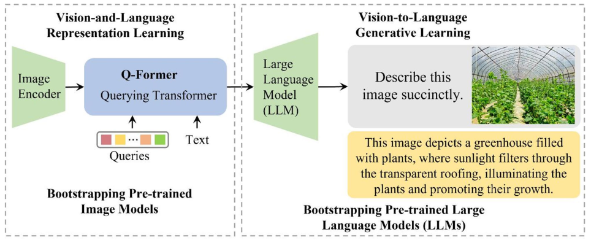
Bộ mã hóa ảnh tạo đặc trưng thị giác, còn LLM xử lý các token ngôn ngữ. Nếu nối trực tiếp, mô hình khó chọn đúng thông tin ảnh liên quan đến câu hỏi.
Dùng các vector truy vấn học được và cơ chế chú ý chéo để trích đặc trưng ảnh phù hợp với ngữ nghĩa văn bản.
Cần chú ý đến chi tiết nhỏ như đốm bệnh, mép lá, màu sắc bất thường và mối quan hệ giữa triệu chứng với tên bệnh.
Bài báo dùng BLIP-2/Q-Former làm nền tảng lý thuyết, nhưng chưa mô tả thật rõ LLMI-CDP kế thừa phần nào, thay đổi phần nào và phần nào được huấn luyện lại trên dữ liệu bệnh cây.
Ghép ảnh-văn bản: học xem cặp ảnh-văn bản có khớp hay không.
Mã hóa ảnh: biến ảnh thành ma trận đặc trưng thị giác.
Mã hóa văn bản: biến mô tả/câu hỏi thành biểu diễn ngữ nghĩa.
Tinh chỉnh LoRA: cập nhật các ma trận hạng thấp thay vì toàn bộ mô hình.
Kiểm thử trả lời: sinh câu trả lời từ ảnh + câu hỏi sau khi căn chỉnh ảnh-ngôn ngữ.
LLMI-CDP không thay toàn bộ mô hình nền. Mô hình giữ lại năng lực tổng quát của VisualGLM/ChatGLM, rồi thêm phần điều chỉnh chuyên biệt cho bệnh cây.
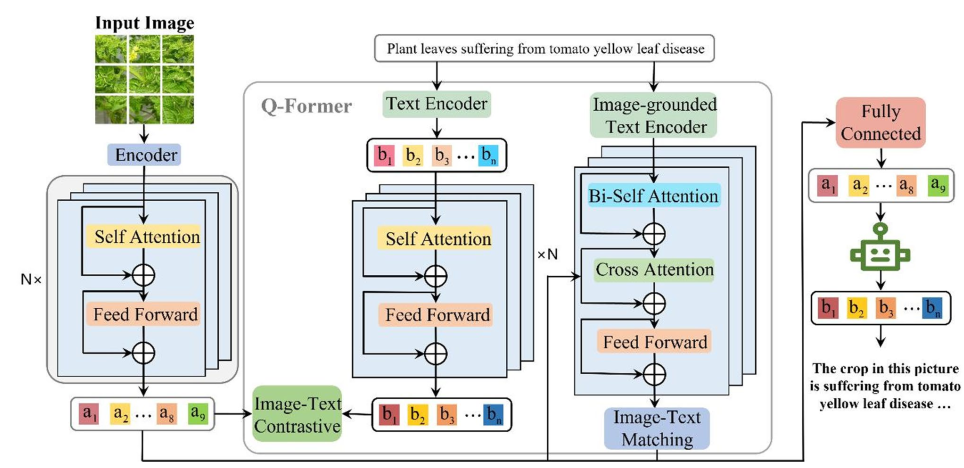
Ảnh được mã hóa thành các vector đặc trưng, sau đó LoRA tối ưu chất lượng đặc trưng mà không huấn luyện lại toàn bộ bộ mã hóa ảnh.
LoRA được dùng để đưa tri thức chuyên ngành nông nghiệp vào ChatGLM, giúp mô hình hiểu ngữ nghĩa bệnh/sâu hại cây trồng, trả lời câu hỏi và đề xuất phác đồ phòng trừ phù hợp.
Bài báo cho rằng Prefix Tuning và P-Tuning v2 không đạt kết quả tốt trong thiết lập này; LoRA ổn định và tiết kiệm hơn.
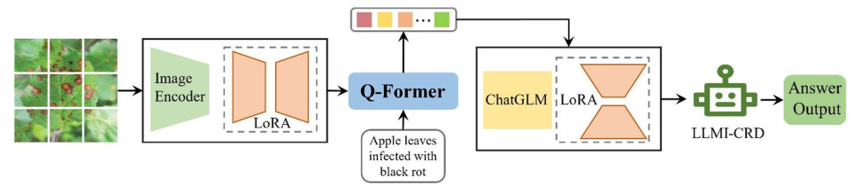
Ảnh được encode thành các vector đặc trưng jk, sau đó gom thành ma trận ảnh J = [j0 ... j196].
Câu hỏi dùng để truy vấn thông tin từ ảnh, được encode thành các question vectors.
Q-Former nhận question vectors và picture feature matrix, rồi tạo vector từ ngữ mang thông tin hình ảnh trước khi đưa vào ChatGLM.
Kiểm thử trả lời là quy trình hỏi-đáp đa phương thức: mô hình dùng đặc trưng ảnh đã được Q-Former chuyển sang biểu diễn ngôn ngữ để ChatGLM sinh câu trả lời.
Dataset tự xây dựng bằng tiếng Trung, bao phủ cây lương thực, rau, cây ăn quả và sâu hại; đánh giá trên nhận diện và hỏi-đáp.
| Nhóm | Nhóm cây trồng | Nhóm bệnh | Số mẫu |
|---|---|---|---|
| Cereals | 6 | 38 | 591 |
| Vegetables | 7 | 43 | 623 |
| Fruit trees | 4 | 28 | 462 |
| Pests | - | 32 | 822 |
| Total | 15 | 141 | 2,498 |
Mỗi ảnh được gắn tên bệnh/sâu hại và sinh thêm 3-4 câu hỏi liên quan đến triệu chứng, đặc điểm bệnh và biện pháp phòng trừ.
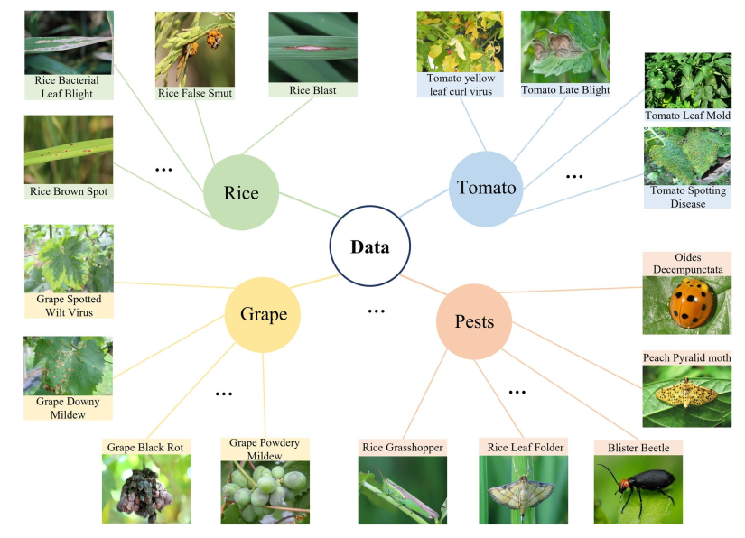
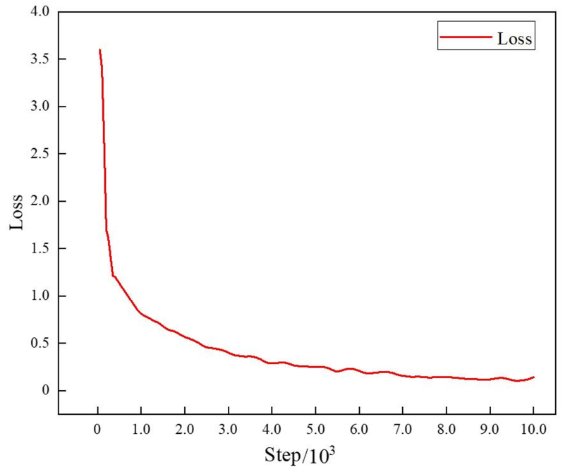
Learning rate 0.0001, batch size 4, repetition penalty 1.2, temperature 0.8, top-P 0.4 và top-K 100.
Bài báo tinh chỉnh LoRA và một số tham số liên quan trong Q-Former; 4 layer ngẫu nhiên được fine-tune để giữ khả năng trả lời câu hỏi tổng quát.
Bài báo không mô tả rõ cách chia dữ liệu huấn luyện/kiểm định/kiểm tra và cách chọn ảnh ngoài bộ dữ liệu, nên khả năng tái lập thực nghiệm còn hạn chế.
Cognitive task: hỏi một lượt “ảnh này bị bệnh gì?” hoặc nhận diện sâu hại trong ảnh.
Question-answer: hội thoại nhiều lượt về triệu chứng, biện pháp phòng và kiểm soát bệnh.
Nguồn ảnh: chọn từ bộ dữ liệu tự xây và một số ảnh không nằm trong bộ dữ liệu.
| Task | Metric | Ý nghĩa |
|---|---|---|
| Nhận diện bệnh | Accuracy, Recall, F1 | Đúng loại bệnh cây |
| Nhận diện sâu hại | Accuracy, Recall, F1 | Đúng loại sâu hại |
| Hỏi-đáp | Fluency, Accuracy | GPT-4 và con người chấm |
| Hỏi-đáp | Response speed | Tốc độ phản hồi |
Điểm cuối kết hợp GPT-4 và đánh giá thủ công theo tỷ trọng 3:7, nhằm giảm rủi ro GPT-4 đánh giá sai các khuyến nghị nông nghiệp.
LLMI-CDP vượt năm MLLM mã nguồn mở trong nhận diện bệnh, nhận diện sâu hại và đánh giá hỏi-đáp.
| Model | Accuracy | Recall | F1-score |
|---|---|---|---|
| Qwen-VL | 61.2 | 61.4 | 61.3 |
| VisCPM | 52.8 | 50.6 | 51.7 |
| MiniGPT4 | 36.7 | 36.6 | 36.6 |
| Ziya-Visual | 25.5 | 21.2 | 22.1 |
| VisualGLM | 72.4 | 70.6 | 71.5 |
| LLMI-CDP | 78.8 | 75.4 | 77.1 |
So với VisualGLM nền, LLMI-CDP tăng F1 từ 71.5 lên 77.1 điểm, cho thấy tinh chỉnh theo miền nông nghiệp tạo lợi ích thực sự.
Không có khoảng tin cậy hoặc kiểm định thống kê, nên kết luận nên dừng ở mức “LLMI-CDP tốt hơn trên thiết lập báo cáo”.
| Model | Accuracy | Recall | F1-score |
|---|---|---|---|
| Qwen-VL | 48.6 | 47.2 | 47.9 |
| VisCPM | 32.9 | 33.6 | 33.2 |
| MiniGPT4 | 56.6 | 56.1 | 56.3 |
| Ziya-Visual | 42.8 | 42.7 | 42.7 |
| VisualGLM | 67.4 | 66.5 | 66.9 |
| LLMI-CDP | 86.7 | 86.4 | 86.5 |
Khoảng cách F1 giữa LLMI-CDP và VisualGLM là 19.6 điểm, lớn hơn đáng kể so với task nhận diện bệnh.
Sâu hại là miền mà MLLM tổng quát dễ thiếu tri thức trực quan; tinh chỉnh theo miền chuyên biệt tạo hiệu quả rõ.
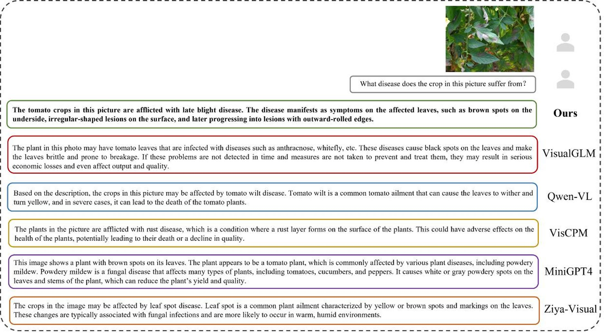
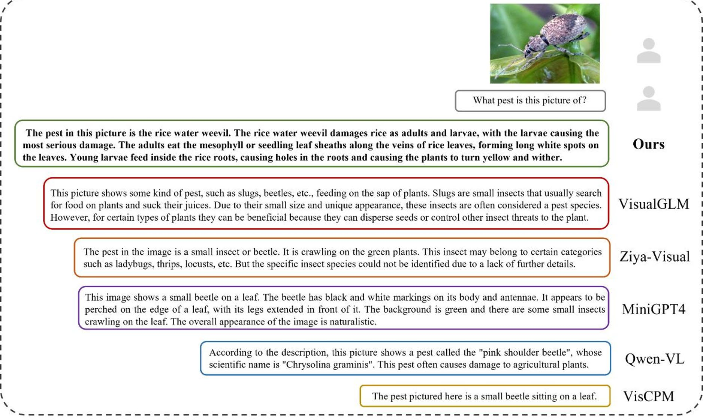
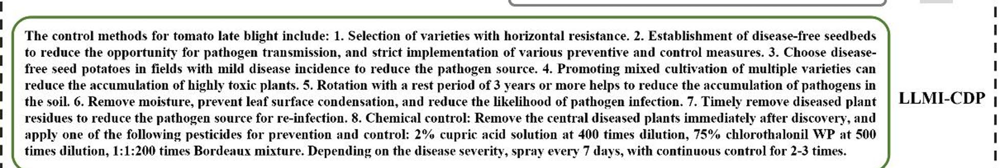
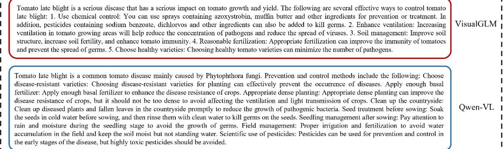
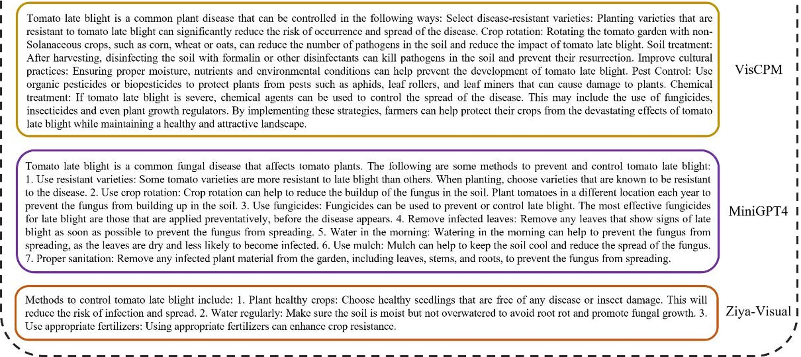
| Model | Fluency GPT-4 | Accuracy GPT-4 | Fluency | Accuracy | Speed | Total |
|---|---|---|---|---|---|---|
| Qwen-VL | 83.4 | 66.2 | 84 | 86 | 85 | 83.3 |
| VisCPM | 79.6 | 62.4 | 80 | 76 | 88 | 77.6 |
| MiniGPT4 | 82.1 | 70.5 | 86 | 78 | 88 | 81.5 |
| Ziya-Visual | 62.8 | 45.6 | 67 | 65 | 82 | 65.2 |
| VisualGLM | 85.2 | 78.6 | 85 | 88 | 90 | 85.9 |
| LLMI-CDP | 89.5 | 88.7 | 88 | 90 | 90 | 89.1 |
Đánh giá QA kết hợp GPT-4 và người chấm theo tỷ lệ 3:7. LLMI-CDP đạt tổng điểm 89.1, cao hơn VisualGLM 3.2 điểm.
Không rõ thang chấm chi tiết, số lượng câu hỏi và mức đồng thuận giữa người chấm, nên kết quả nên xem như bằng chứng hỗ trợ.
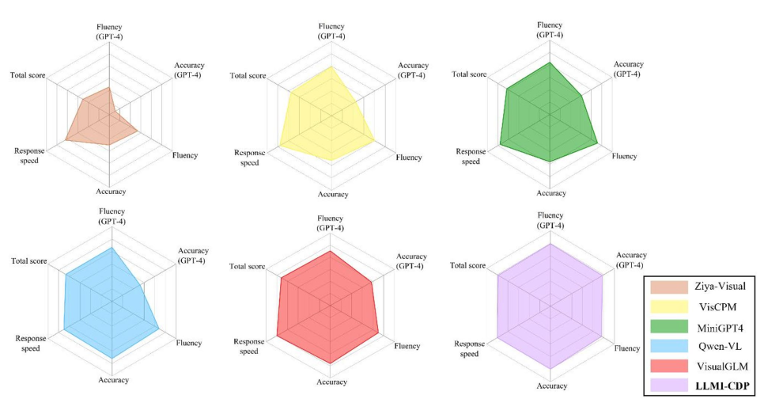
Kết quả tốt, nhưng cần đọc cùng các câu hỏi về dữ liệu, đánh giá, tái lập và triển khai thời gian thực.
Đúng bài toán thực tế: nông dân cần hỏi-đáp và tư vấn, không chỉ nhãn phân lớp.
Điều chỉnh mô hình hợp lý: Q-Former + LoRA là lựa chọn tiết kiệm khi dữ liệu chuyên ngành không quá lớn.
So sánh nhiều mô hình nền: đánh giá với năm MLLM phổ biến, có cả số liệu định lượng và ví dụ định tính.
Kết quả nhất quán: LLMI-CDP đứng đầu trong nhận diện bệnh cây, nhận diện sâu hại và điểm hỏi-đáp.
Bộ dữ liệu nhỏ: 2,498 ảnh cho 141 nhóm bệnh/sâu hại, trung bình số mẫu mỗi loại thấp.
Thiếu chi tiết chia dữ liệu: bài báo không mô tả đủ rõ cách tách dữ liệu huấn luyện/kiểm tra và ảnh ngoài bộ dữ liệu.
Đánh giá hỏi-đáp chưa chuẩn hóa: thiếu thang chấm chi tiết, số lượng mẫu và độ đồng thuận người chấm.
Độ trễ suy luận: tác giả thừa nhận kiến trúc xử lý nhiều tầng còn khó đáp ứng thời gian thực trên thiết bị biên.
LLMI-CDP là một bước tiến hợp lý cho MLLM nông nghiệp, nhưng bằng chứng hiện tại phù hợp nhất để chứng minh tiềm năng hơn là khẳng định sẵn sàng triển khai đại trà.
Mô hình học trên bộ dữ liệu tiếng Trung tự xây, nhưng bệnh cây chịu ảnh hưởng bởi vùng địa lý, ánh sáng, giống cây và mùa vụ.
Kiểm tra trên vùng khác, cây trồng khác, ảnh thực địa chất lượng thấp và các bệnh chưa từng có trong dữ liệu huấn luyện.
Khuyến nghị thuốc và biện pháp phòng trừ có thể phụ thuộc quy định địa phương, liều lượng và giai đoạn sinh trưởng.
Kết hợp tra cứu tài liệu nông học, kiểm chứng chuyên gia và cơ chế biết khi nào chưa chắc để từ chối trả lời.
Căn chỉnh ảnh-văn bản linh hoạt, học bổ sung dần khi gặp dữ liệu mới và chưng cất sang mô hình nhỏ hơn.
Giảm độ trễ phản hồi để dùng trên thiết bị biên trong môi trường nông nghiệp.
Nếu phải triển khai thật, ta nên ưu tiên tăng độ chính xác nhận diện, tăng độ tin cậy tư vấn, hay giảm độ trễ? Ba mục tiêu này có thể xung đột.
Tinh chỉnh một MLLM nền bằng dữ liệu bệnh cây và LoRA/Q-Former có thể cải thiện rõ rệt khả năng nhận diện và hỏi-đáp nông nghiệp.
LLMI-CDP cho thấy hướng đi khả thi để chuyển MLLM từ miền tổng quát sang trợ lý chuyên biệt cho nông nghiệp thông minh.
F1 nhận diện bệnh cây
F1 nhận diện sâu hại
Tổng điểm hỏi-đáp
ảnh trong bộ dữ liệu
Đi từ phân lớp ảnh sang hệ thống đối thoại có thể nhận diện, mô tả và đề xuất biện pháp phòng trừ.
VisualGLM/ChatGLM làm nền, Q-Former căn chỉnh ảnh-ngôn ngữ, LoRA tinh chỉnh miền hẹp.
Vượt VisualGLM, Qwen-VL, VisCPM, MiniGPT4 và Ziya-Visual trong các bảng báo cáo.
Cần thêm bộ kiểm thử có thể tái lập, dữ liệu đa vùng, thang chấm hỏi-đáp rõ và tối ưu độ trễ cho thiết bị biên.
Kết quả thuyết phục như một bản chứng minh ý tưởng cho MLLM nông nghiệp, nhưng chưa đủ để kết luận hệ thống an toàn cho tư vấn canh tác thực tế nếu thiếu kiểm chứng chuyên gia và dữ liệu ngoài phân phối.
Mời đặt câu hỏi và thảo luận về LLMI-CDP, tinh chỉnh MLLM cho nông nghiệp, và độ tin cậy của tư vấn tự động.
doi.org/10.1038/s41598-025-01908-0
LLMI-CDP · VisualGLM · Q-Former · LoRA
bệnh cây · nhận diện sâu hại · hỏi-đáp đa phương thức